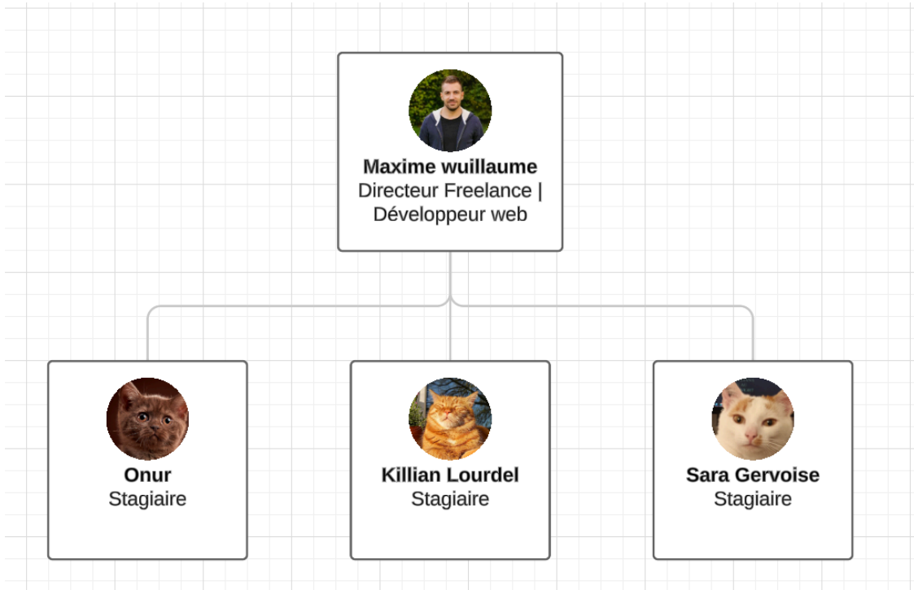

Présentation
Ce stage a été réalisé chez SENDIX, une micro-entreprise spécialisée dans le développement web et les services informatiques.
Durant mon stage, j'ai eu l'opportunité de travailler sur divers projets, ce qui m'a permis d'acquérir de nouvelles compétences et de renforcer mes connaissances en développement web.
Projets Réalisés
Refonte du site web de Wisikard
Modernisation de l'interface et amélioration de l'expérience utilisateur.


Création d'un site de ticketing
Développement d'un système permettant la gestion et le suivi des tickets de support.


Développement d'un site de gestion de produits avec QR Code
Mise en place d'un outil permettant de générer et scanner des QR Codes pour simplifier la gestion des stocks.
Compétences Acquises
Grâce à ce stage, j'ai pu développer plusieurs compétences :
- Maîtrise des technologies web (HTML, CSS, JavaScript, PHP, SQL)
- Résolution de problèmes techniques et optimisation du code
- Déploiement et hébergement de sites web
- Génération de Qr Code